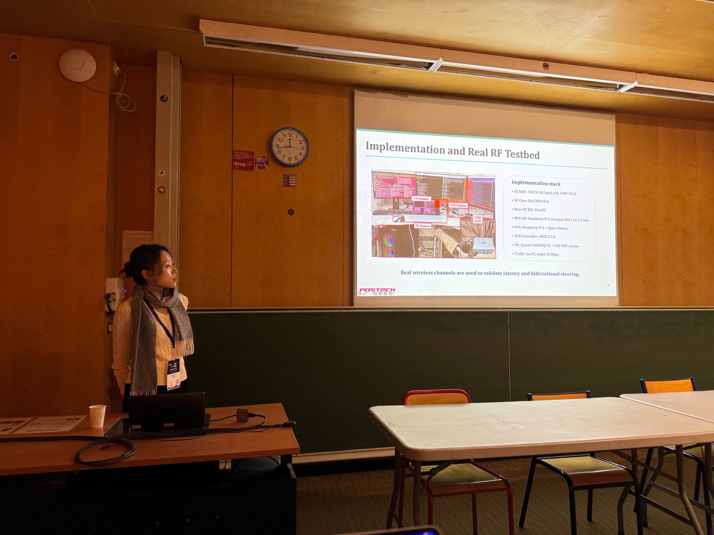
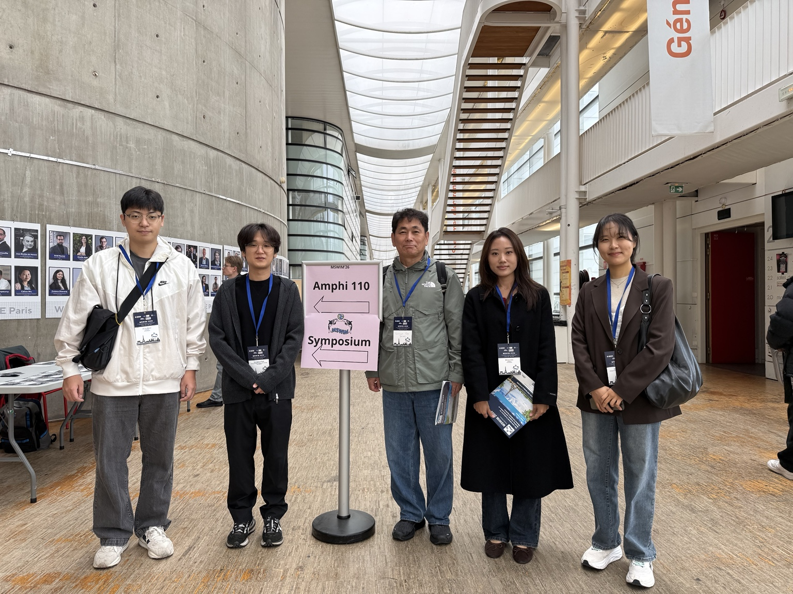
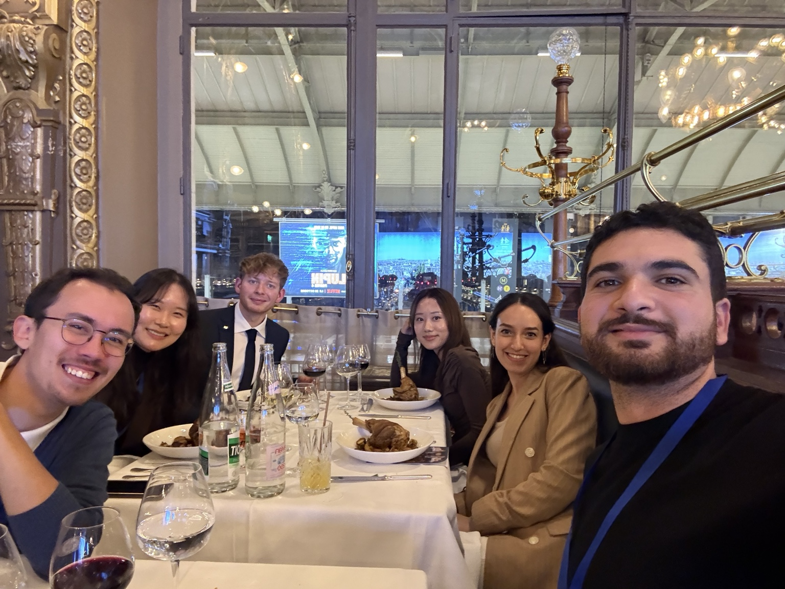

Researcher · ETRI
5G/6G RAN systems and open-source RAN research
Aug 2026 – Present
Researcher, Electronics and Telecommunications Research Institute (ETRI)
South Korea

I'm happy to connect with researchers and engineers interested in wireless networks, O-RAN, and next-generation RAN systems. Feel free to reach out ↗
I am a researcher at the Electronics and Telecommunications Research Institute (ETRI), South Korea, and hold an M.S. degree in Computer Science and Engineering from POSTECH. My research focuses on programmable network architectures and the joint optimization of communication and computing resources.
My previous work includes delay estimation in decentralized P2P networks and O-RAN-based bidirectional traffic steering between 5G and Wi-Fi. Currently, I investigate GPU-accelerated RAN systems, including MAC/PHY integration and latency-aware processing and scheduling. I am interested in designing adaptive network control and resource scheduling mechanisms that account for the computational and timing constraints of real systems.
Building an end-to-end OpenAirInterface (OAI) 5G Standalone testbed with USRP hardware and investigating the integration of OAI MAC with NVIDIA Aerial PHY. My current research explores GPU-based PHY processing and resource scheduling under latency constraints.
Designed and implemented a Near-RT RIC-based system for bidirectional traffic steering between 5G and WiFi, using real-time network measurements and an end-to-end hardware testbed.
Investigated TIV-aware anchor selection and lightweight network coordinate mechanisms for delay estimation in decentralized P2P networks.
I presented our paper, “O-RAN Near-RT RIC-Based Multi-RAT Bidirectional Traffic Steering between 5G and WiFi,” and exchanged research ideas with fellow researchers during the conference.



5G/6G RAN systems and open-source RAN research
O-RAN traffic steering and decentralized network delay estimation
Edge computing for augmented reality
M.S. in Computer Science and Engineering
B.S. in Information, Communications, and Electronic Engineering
I'm always happy to connect about research, collaborations, and potential opportunities.